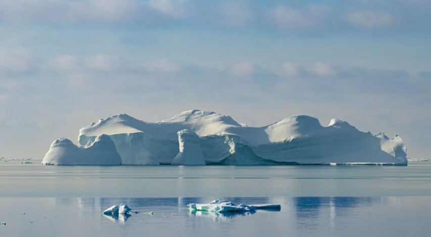

Operação Mata Atlântica aplica R$ 9 milhões em multas em MG
A Operação Mata Atlântica em Pé, que luta contra o desmatamento, descobriu cerca de 1.020 hectares de vegetação nativa sendo suprimida em Minas Gerais. De 19 a 22 de setembro, equipes da Polícia Militar do Meio Ambiente, da MPMG, SEMAD e o Ibama inspecionaram 71 alvos suspeitos de atividades criminosas ambientais nos vales do Mucuri e Jequitinhonha, no norte de Minas Gerais.
Para mais informações acesse:CNN - Operação Mata Atlantica em pe aplica mais de 9 milhões em multas em MG
Seca na Amazônia pode bater recorde e se estender até janeiro

A seca severa que atinge a Amazônia neste ano pode bater recorde e se estender até o mês de janeiro, segundo previsão do Centro de Monitoramento e Alertas de Desastres Naturais (Cemaden), ligado ao governo federal. A situação de diversos rios estratégicos para a região é crítica, com vazões (volumes) abaixo da média histórica.
Para mais informações acesse:Globo - Seca na Amazonia pode bater recorde e se estender até janeiro situação de rios estratégicos é critica
Startup ambiental jura restaurar 1M de hectares de florestas

Uma startup ambiental brasileira apresentou sua proposta de recuperação florestal em larga escala de áreas degradadas durante dois eventos ocorridos às margens da Assembleia-Geral da ONU, em Nova York, e no Brazilian Climate Summit, na Columbia University. Em entrevista à CNN, Picolo disse que a empresa pretende restaurar um milhão de hectares de florestas tropicais no Brasil nos próximos anos.
Para mais informações acesse:CNN - Startup ambiental brasileira promete restaurar um milhão de hectares de florestas
Lago Titicaca, o corpo de água navegável mais alto do mundo está secando
Os níveis de água no lago Titicaca – o lago navegável mais alto do mundo e o maior da América do Sul – estão diminuindo rapidamente após uma onda de calor no inverno sem precedentes. A redução chocante afeta o turismo, a pesca e a agricultura, dos quais os habitantes locais dependem para viver.
Para mais informações acesse: CNN- Lago Titicaca o corpo de água navegável mais alto do mundo esta secandoRestos de máscaras são achados dentro de estômago de tartaruga no ES
A poluição por plástico e microplástico nos oceanos é um problema conhecido, afetando até a formação de rochas em um arquipélago distante do Brasil. Há pouco, veterinários no Espírito Santo acharam restos de uma máscara no estômago de uma tartaruga, marcando a primeira ocorrência desse tipo.
Para mais informações acesse:Globo - Restos de mascara são encontrados pela primeira vez dentro de estomago de tartaruga no ES
Terra teve o agosto mais quente da história em 2023, diz agência americana.
O mês passado foi o agosto mais quente já registrado, com temperaturas recordes em vários continentes, segundo a Administração Oceânica e Atmosférica Nacional (NOAA). A temperatura média global foi de 1,25°C acima da média do século 20, superando o recorde anterior de 2016 em 0,29°C.
Para mais informações acesse:Globo - Terra teve o agosto mais quente da historia em 2023 diz agencia americana
25% da humanidade enfrenta estresse hídrico extremo; entenda o termo
O Atlas de Riscos Hídricos de Aquedutos do World Resources Institute indica que 1/4 da população mundial sofre de “estresse hídrico bastante alto” anualmente. Isso significa que esses países estão utilizando pelo menos 80% de seu suprimento de água renovável. O relatório, que é publicado a cada quatro anos, prevê que mais 1 bilhão de pessoas serão afetadas por esse fenômeno até 2050.
Para mais informações acesse:CNN - 25% da humanidade enfrenta estresse hídrico extremo entenda o termo
Não há como esfriar os oceanos pelas próximas décadas, diz climatologista à CNN
Francisco Aquino, professor e chefe da repartição de Geografia da UFRS, afirma que os efeitos do aquecimento global são inevitáveis. A atividade humana levou a um aquecimento do planeta que terá consequências irremediáveis para as futuras gerações. Eventos extremos, como ondas de calor e tempestades intensas, serão desafios para os governos mundiais.
Para mais informações acesse:CNN - Não ha como esfriar os oceanos pelas próximas décadas diz climatologista a CNN